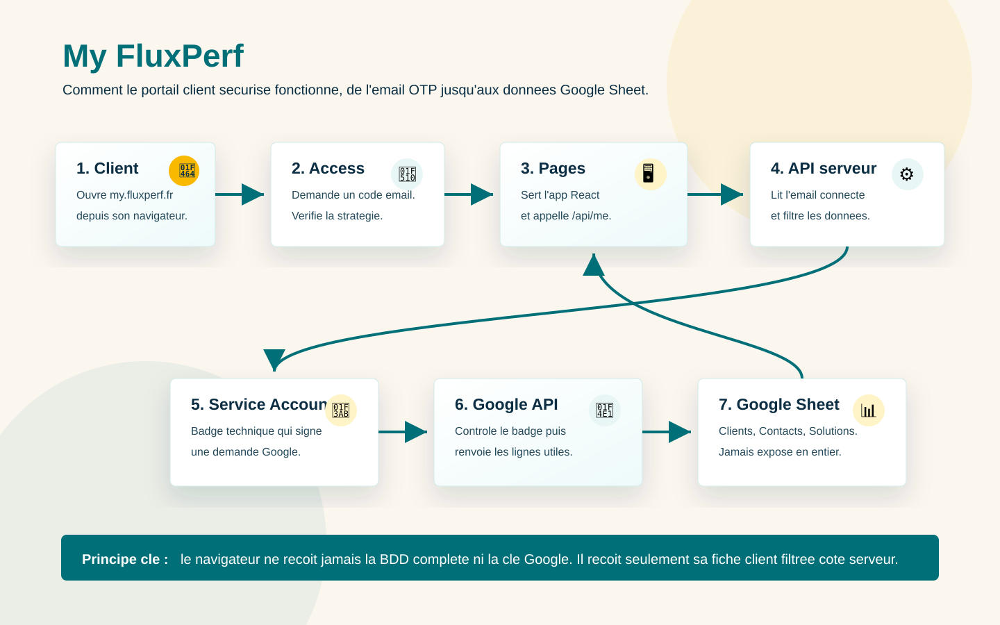

my.fluxperf.fr vers le bon service Cloudflare.
Document d'archive
My FluxPerf
Cloudflare + Google Sheets
Comprendre le portail client My FluxPerf
Cette page explique le role de chaque brique, le chemin d'une connexion, les erreurs courantes et les points a verifier pour reprendre le projet.
L'histoire simple
Le portail fonctionne comme une agence privee. Cloudflare Access joue le role du vigile, Cloudflare Pages heberge la salle d'accueil, l'API serveur va chercher uniquement la bonne fiche client, et Google Sheets reste le classeur de reference.
Le role de chaque outil
/api/me cote serveur, la ou les secrets restent caches.
Clients, Contacts, Sites.
main declenche le redeploiement.
Schema de fonctionnement

Chemin d'une connexion
- Le client ouvre
https://my.fluxperf.fr. - Cloudflare Access demande un email et envoie un code OTP.
- Si l'email est autorise, Access pose un jeton de session.
- React charge le dashboard et appelle
/api/me. - L'API lit l'email connecte depuis Cloudflare Access.
- L'API lit Google Sheets via le Service Account.
- L'API cherche un client actif correspondant a cet email.
- React recoit uniquement cette fiche client et affiche le dashboard.
Conditions pour afficher un client
Le client doit respecter ces conditions dans Google Sheets :
Clients.statut_client = ActifClients.espace_client_actif = Oui- l'email connecte est dans
Clients.email_principalou dansContacts.email - le contact correspondant n'est pas inactif
Erreurs utiles a connaitre
| Erreur | Signification | Action |
|---|---|---|
AUTH_REQUIRED |
L'API ne voit pas l'identite Cloudflare Access. | Verifier Access, le domaine protege et le correctif JWT. |
CLIENT_NOT_CONFIGURED |
L'utilisateur est connecte, mais aucun client actif ne correspond. | Verifier email, statut client et espace client actif dans le Google Sheet. |
DATA_UNAVAILABLE |
L'API n'arrive pas a lire Google Sheets. | Verifier les secrets Cloudflare, le partage du Sheet et les ranges. |
Variables Cloudflare importantes
APP_ENV=production GOOGLE_SHEET_ID=... GOOGLE_SHEET_RANGE=Clients!A1:Z1000 GOOGLE_CONTACTS_RANGE=Contacts!A1:Z1000 GOOGLE_SITES_RANGE=Sites!A1:Z1000 GOOGLE_SERVICE_ACCOUNT_EMAIL=... GOOGLE_PRIVATE_KEY=... CF_ACCESS_HOSTNAME=my.fluxperf.fr
La cle GOOGLE_PRIVATE_KEY doit rester un secret Cloudflare.
Elle ne doit jamais etre ajoutee au repository GitHub.
Tests a faire apres chaque mise a jour
/api/healthdoit repondrestatus: ok.- En navigation privee, Access doit demander un OTP email.
- Un email autorise et actif doit arriver sur le dashboard.
- Un email absent doit afficher un refus propre.
- Les cartes sans URL doivent rester propres et desactivees.
- Verifier rapidement desktop et mobile.